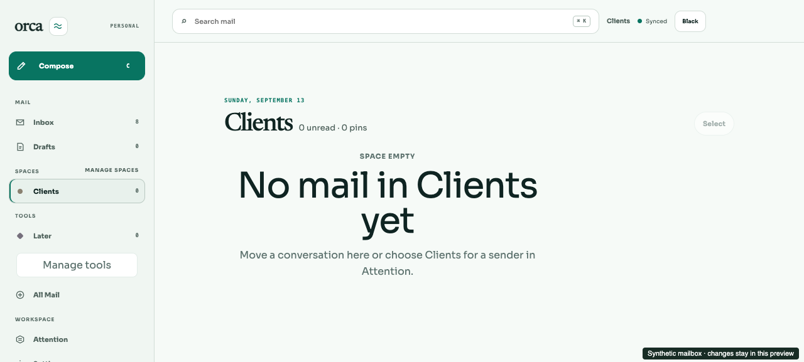

ORCA · INTERACTIVE PREVIEW
Your mail, your spaces.
Create and name the spaces that make sense to you. They appear in the sidebar, and the same choices are available from a conversation, the inbox menu, and Attention.
Open the Tailnet preview →
This is a synthetic mailbox. Changes stay in this preview and survive page reloads; restarting the preview resets its sample data. No real mail is moved or sent.

Try the workflow
- Create your space. Choose Manage spaces in the sidebar, enter a name such as Clients or Reading, and select Create space.
- Move one conversation. Open a message or its inbox menu and choose Move to space. Keep the conversation scope to move only that conversation.
- Choose a sender. In Attention, select the connected account and give a sender a space. Existing and future conversations from that sender inherit the choice unless a conversation has its own choice.
- Change your mind. Use Undo immediately after a change, or reset a conversation or sender to its inherited choice. Reopen the chooser to inspect the saved state.
- Make it yours. Rename a space, switch between spaces, reload, and try light or dark mode. The space keeps its identity when renamed.
What to expect
- Spaces are shared in the sidebar across connected accounts. Sender and default choices belong to the account selected in Attention.
- The workspace starts with Inbox. The Clients example was created during the live preview check.
- A referenced space cannot yet be removed: move its mail and clear its routing references first. The default space cannot be removed.
- Custom-space filter saving is unavailable in this first version. Advanced Collections and Views remain under separate tools.
- Notification preferences do not yet enable notification delivery.
Verification
Real API and SQLite browser checks covered creation, sender and future-mail routing, account isolation, reload, reader Back/Forward, read state, Undo, selection reset, defaults, renaming, safe removal rejection, and Settings/mobile parity. Controls were checked in light/dark at desktop, 1024px, and 390px widths.
The Spaces wording passed nine targeted UI tests, web typecheck, and production build. The final MCP correction passed all 17 MCP tests and API typecheck. Full CI passed for the implementation before the final wording and preview-documentation commit; consult the PR checks for the latest head.
PR #188 and current checks →